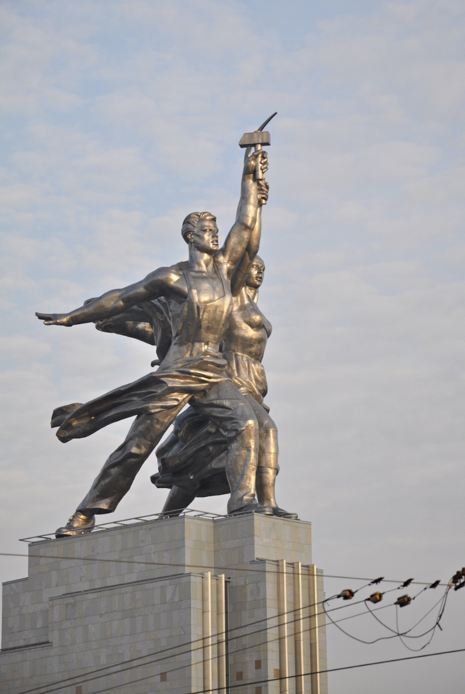

Rusn 388 Socialist Realism.
- Check the post on the web page designed by the students from the course.
- On Restructuring Literary-Artistic Organizations This Resolution of the Central Committee of the Communist Party called for the creation of the Union of Soviet Writers that established socialist realism as the method of Soviet literature, cinema, and all other arts.
-
Apotheosis in architecture refers to the deification or glorification of a subject, often depicted through art within a dome or elevated structure to symbolize rising to the heavens. Socialist realist artists used this device to glorify modern technology and communist ideology.

Fig.1. Worker and Collective Farm Woman (sculpture by Vera Mukhina, 1937)